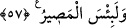

hususlarda da “Peygamber’e itâat edin”: Bu da mânâyı tamamlama kabilinden bir
cümledir. “Ki merhamete erersiniz” yâni merhamete ermeyi umarak, zikri geçen namaz,
zekât ve itâat emirlerini yerine getirin. Çünkü merhamete erme, bu üç duruma
bağlanmıştır.
57. İnkâr edenlerin, yeryüzünde (Allah’ı) âciz bırakacaklarını sanmayasın!
Onların varacağı yer cehennemdir. Ne kötü varış yeri!
Ey Muhammed veya kim olursa olsun bu hitâba elverişli kimse “inkâr edenlerin,
yeryüzünde Allah’ı âciz bırakacaklarını sanmayasın!” Yâni onları, kaçılabilecek her
yere kaçsalar da genişliğine rağmen kıtaların birinde kendilerini yakalayıp helâk
etmekten Allah’ı âciz bırakacaklarını sanmayasın.
“Onların varacağı yer cehennemdir” yâni inkâr edenlerin, yeryüzünde Allah’ı âciz
bırakacaklarını sanmayasın! Çünkü onlar yakalanacaklar ve varacakları yer de
cehennemdir.
“Ne kötü varış yeri!” Bu cümle, takdir olunacak bir yeminin cevâbıdır. Yâni Allah’a
yemin olsun ki, ne kötü dönüş ve varış yeridir o cehennem!
Âyette, nimetlere nankörlük etmeye işâret vardır. Allah’ın verdiği nimetleri günah
yolunda kullanıp işlemekte oldukları tâat ve ibâdetleri terk edenlerin varacakları yer,
Allah’tan kopup ayrılma ateşidir.
Hz. Ali (r.a.) der ki: “Allah için size lâzım olan şeylerin en azı, O’na karşı gelirken
O’nun nimetlerinden istifâde etmemenizdir.”
Hasan (r.h.): “İki günün eşit olursa sen eksiksin demektir” deyince ona: “Bu nasıl
olur?” diye soruldu. Bunun üzerine: “Bu gününde Allah sana fazladan pek çok nimet
daha vermiştir. Senin de bunlara karşı şükrünü artırman gerekir.”
Her şey kendine mahsus bir iş için yaratılmıştır. O şeyin kıymeti, kendinden beklenen
işin tam olarak ortaya çıkmasıyla olur. Meselâ at düşmana saldırmada ve gerektiğinde
ondan kaçmada kullanılmak içindir. Kılıç da kendine mahsus işi görmek içindir. Bütün
âzâlar özellikle dil ise şükür içindir. Ne zaman bir şeyde yaratılış gayesi olan mânâ
bulunmazsa eksik olur. İbâdetlerinde eksiği olan insan, âzâ ve âletleri eksik olan insan
gibidir.
Bilesin ki Rasûlullah (s.a.) bütün insanları Allah Teâlâ’ya, O’nu birlemeye ve O’na
itâata çağırmış, bu çağrıya icâbet eden etmiştir. Onlar saâdet ehli olan bu kimselerdir.
Onların ilkleri, sahâbe (r.anhüm)’dür. Yüz çeviren de yüz çevirdi. Onlar da şakâvet
ehlidir. Onların ilkleri de Hz. Peygamber (s.a.)’le aynı çağda yaşayan kâfirler ve
münâfıklardır. Onlar Rasûlullah (s.a.)’e itâati terk edip bunda ısrar etmekle Allah